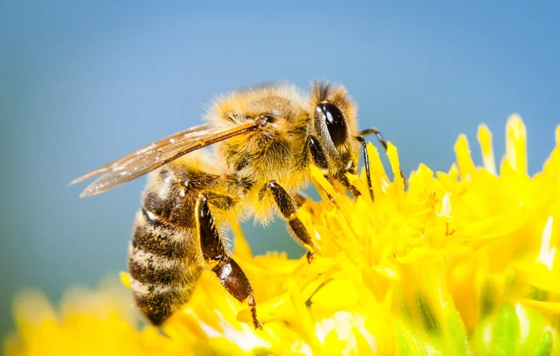

이 웹페이지는 왜 존재하나요? 우리가 잘 알지 못하는 핵심종에 대해 사람들에게 알리고 핵심종들을 보호하기 위해서입니다.
그런데 우리가 잘 들어보지도 못한 핵심종을 굳이 보호해야 하나요?
하지만 핵심종들의 멸종은 생테계에 정말 큰 영향을 끼칠 뿐만 아니라 '우리'에게도 심각한 영향을 줄 수 있습니다.
먼저 핵심종을 왜 보호해야 하는지 알기 전에, 우리는 먼저 핵심종이 대체 무엇인지에 대해 알아 볼 필요가 있습니다. 핵심종(Keystone species)이란 생태계에 큰 영향을 미치는 생물종을 말합니다. 이들은 초식동물을 포식하거나 그외의 방법을 통해 개체 수를 통제하며, 결국 생태계 유지에 엄청난 기여를 합니다.

이런 핵심종들의 멸종이란 우리 생테계에는 재앙이나 다름없습니다. 이러한 핵심종들 중 하나인 꿀벌이 최근에 급격하게 사라지고 있는데, 만약 이들이 사라진다면 인간이 먹는 전체 식량 생산의 33%가 사라지는 등 생태계와 우리에게 여러가지 피해를 줍니다.
이것이 우리가 핵심종을 알아야 하는 이유이며 우리가 핵심종을 보호해야하는 이유입니다.

OHYUN
제작자 : 고윤혁, 김민건, 문지혁